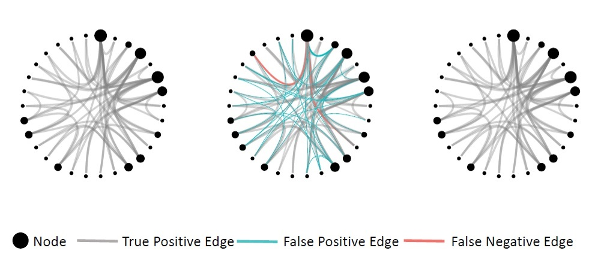
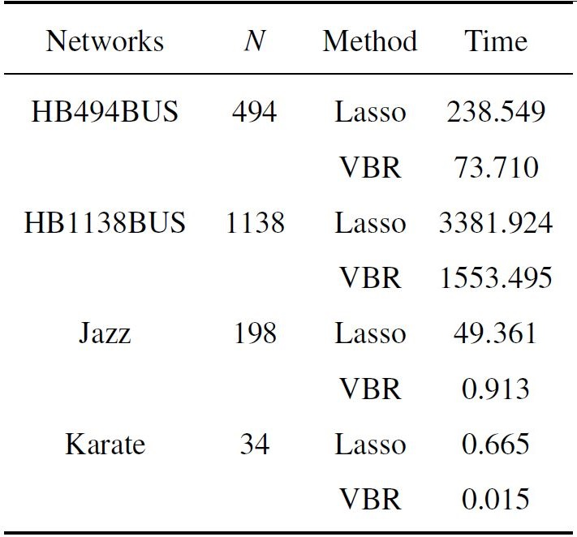
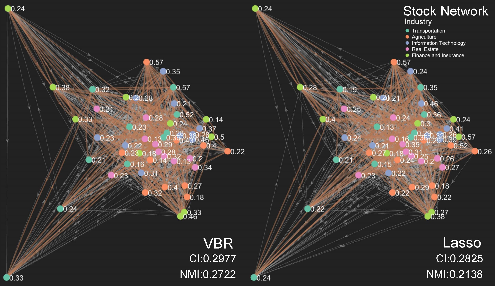

\(\min |y-Xw|_2^2+\lambda_{lasso}|w|_1\)
\(y=X\mathbb{D}(a)w\)
VBR is an elegant framework for large-scale weighted complex networks reconstruction.

For a Barabasi-Albert network of 30 nodes and 30 time series samples, our method correctly identifies all edges. But lasso with 5-fold cross validation generates 2 false positive edges and 36 false negative edges.

VBR is extremely fast since it does not need cross validation. For a network with 1000+ nodes, lasso takes about 1 hour to acomplish the task. As for our method VBR, it consumes only less than 0.5 hour to recover the whole network.

We applied lasso and VBR to a stock network, which consists of 50 stocks from Shanghai Stock Exchange and Shenzhen Stock Exchange. It is found that the network recovered by VBR does a better job in terms of capturing the inter-coupled relationship among stocks.
@article{xu2020variational,
author = {Xu, Shuang and Zhang, Chunxia and Wang, Pei and Zhang, Jiangshe},
title = {Variational Bayesian Weighted Complex Network Reconstruction},
journal = {Information Sciences},
volume = {},
number = {},
pages = {},
year = {2020},
month = {}}.